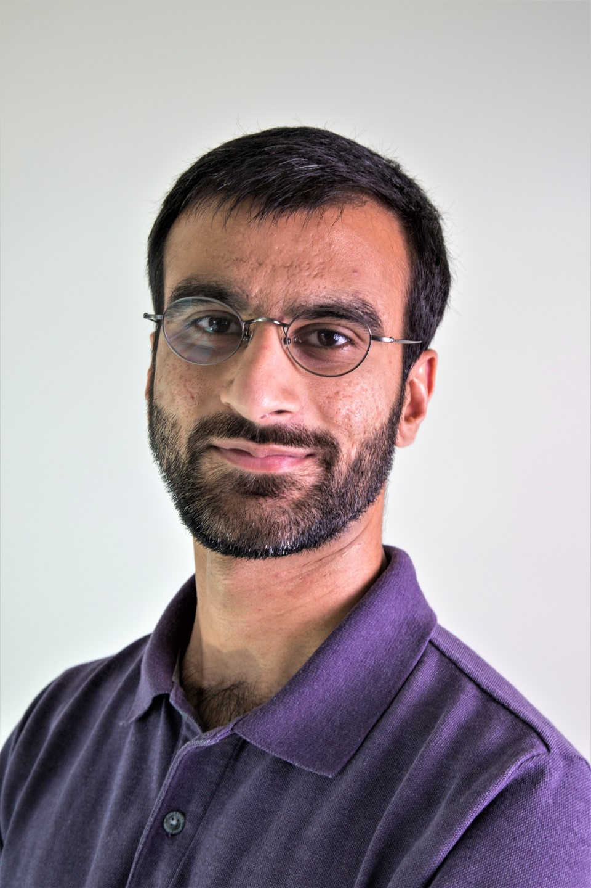

 I have been a research assistant and PhD candidate in the Electrical and Computer Engineering at the University of Illinois at Urbana-Champaign (UIUC) since 2017. I am advised by Ivan Dokmanić and we are affiliated with the Coordinated Science Laboratory.
I am working on developing machine learning and signal processing algorithms and methods for solving image reconstruction problems. Imaging through media which scatters light such as paint, seismic imaging and xray medical imaging have been particularly fun applications to work on.
I graduated from Churchill College at the University of Cambridge with bachelor's and master's degrees in Engineering in 2014. Between Cambridge and UIUC I worked at Samsung Research in South Korea where I designed new APIs for smartphones, smart TV, smartwatches and other IoT devices. I used to regularly speak about this work in conferences sessions, keynotes, online shows and other online tutorials.
Jump to:| 24 January 2020 | Fast Optical System Identification by Numerical Interferometry accepted into IEEE International Conference on Acoustics, Speech and Signal Processing (ICASSP) 2020 |
| 3 September 2019 | Don't take it lightly: Phasing optical random projections with unknown operators accepted into Neural Information Processing Systems (NeurIPS) 2019 |
| 28 May 2019 | I am spending the summer at IBM Research's Thomas J. Watson Research Center in Yorktown Heights, New York |
| 1 February 2019 | Solving Complex Quadratic Equations with Full-rank Random Gaussian Matrices accepted into IEEE International Conference on Acoustics, Speech and Signal Processing (ICASSP) 2019 |
| 15 January 2019 | I will be the teaching assistant for the first edition of a new course ECE 598ID: Inverse problems and learning |
| 20 December 2018 | Random mesh projectors for inverse problems accepted into International Conference for Learning Representations (ICLR) 2019 |
| 15 August 2017 | Started PhD in Electrical Engineering at UIUC |